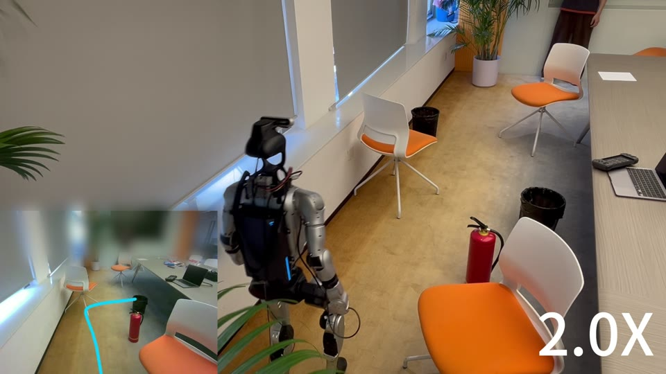

Align the goal
Image and point goals are projected into complementary visual-semantic and geometric queries. Cross-modal alignment trains paired goals that share a navigation endpoint; no-goal uses a masked zero representation.
Conference on Robot Learning · 2026
Long-horizon action plans. Near-future visual foresight.
One policy for image-goal, point-goal, and no-goal navigation.
* Corresponding authors: Yan Huang · Zheng Zhu
From simulation to the real world
Joint action and visual prediction, deployed zero-shot on a Unitree G1 humanoid with an RGB camera.
Explore the demonstrations
Unitree G1 · Zero-shot deployment01 / Overview
WAM-Nav couples action generation with latent visual foresight inside a shared Diffusion Transformer. Visual observations, recent motion, and the goal jointly condition a long action plan and a short future visual prediction.
A target RGB image specifies the destination.
Relative coordinates specify the destination.
The same policy explores without a destination.
Visual navigation requires generating executable trajectories under complex geometric and physical constraints. Existing reactive policies that directly map observations to actions lack anticipatory reasoning, limiting their ability to incorporate future perceptual context. While visual imagination offers predictive foresight, conventional modular approaches separate scene prediction from policy learning, which can increase inference cost and sensitivity to prediction errors. To address these limitations, we propose WAM-Nav, a Latent World-Action Model for embodied visual navigation that jointly learns action generation and latent visual foresight, enabling more robust and foresighted navigation decisions while retaining practical inference efficiency. Specifically, WAM-Nav utilizes a shared Diffusion Transformer for asymmetric joint diffusion to concurrently generate long-horizon actions and short-horizon visual foresight, avoiding the need for multi-step autoregressive visual rollouts at inference. To further condition trajectory generation on recent motion, we introduce a dual-stream contextual conditioning mechanism that integrates episode-level ego-motion history with sequential visual observations. Combined with a unified goal alignment module that preserves balanced representations across goal types, WAM-Nav naturally supports Image-Goal, Point-Goal, and No-Goal exploration within a single policy. Extensive experiments on the challenging ClutterScenes and InternScenes benchmarks demonstrate strong generalization of WAM-Nav, particularly on Image-Goal and Point-Goal navigation, where it improves success rates by 15.7% and 3.3% relative to NavDP, respectively. Real-world deployment further validates effective zero-shot sim-to-real transfer, achieving an average 85% task success rate across diverse indoor and outdoor environments.
02 / Method
The asymmetric design generates a 24-step action trajectory alongside one step of latent visual foresight. Joint flow matching couples both outputs without a multi-step autoregressive visual rollout.
Image and point goals are projected into complementary visual-semantic and geometric queries. Cross-modal alignment trains paired goals that share a navigation endpoint; no-goal uses a masked zero representation.
Goal-modulated RGB memory captures local scene context. An egocentric motion history summarizes recent trajectory dynamics. Cross-attention fuses these streams into the shared conditioning context.
Action and latent visual tokens interact in the shared DiT. At deployment, a 10-step Euler solver samples candidate trajectories, and receding-horizon control executes the first part of the selected plan.
Limited camera height and field of view can hide near-field obstacles. The policy also does not explicitly model robot embodiment, so camera-level obstacle avoidance can differ from full-body traversability. The paper discusses adaptive viewpoint control and embodiment-aware training as future directions.
03 / Results
Trained on VLN-N1, with over 400 hours and 200K navigation trajectories. Zero-shot evaluation uses ClearPath Dingo in IsaacSim across ClutterScenes and InternScenes, with a benchmark of 6,000 episodes across 60 scenes.
Navigate to a target specified by an RGB image.
SR / SPL (%) ↑Scroll horizontally to see all scenes →
| Method | Average | Clutter · Easy | Clutter · Hard | Intern · Home | Intern · Commercial |
|---|---|---|---|---|---|
| GNM | 16.3 / 15.7 | 26.9 / 25.9 | 20.0 / 19.2 | 7.7 / 7.3 | 10.5 / 10.3 |
| ViNT | 12.7 / 11.8 | 15.0 / 13.9 | 16.5 / 15.2 | 6.2 / 6.0 | 12.9 / 12.2 |
| NoMaD | 8.5 / 7.7 | 8.3 / 6.9 | 7.3 / 6.9 | 6.7 / 6.2 | 11.7 / 10.7 |
| NWM | 8.1 / 7.7 | 12.7 / 12.0 | 8.7 / 8.4 | 4.0 / 3.9 | 6.9 / 6.6 |
| NavDP | 43.4 / 41.4 | 49.7 / 48.4 | 47.5 / 46.3 | 29.8 / 27.7 | 46.6 / 43.3 |
| WAM-Nav | 50.2 / 48.2 | 66.1 / 64.5 | 55.6 / 53.4 | 30.7 / 29.4 | 48.3 / 45.6 |
15.7% relative SR improvement over NavDP (50.2% vs. 43.4%; +6.8 percentage points).
Navigate to a target specified by relative coordinates.
SR / SPL (%) ↑Scroll horizontally to see all scenes →
| Method | Average | Clutter · Easy | Clutter · Hard | Intern · Home | Intern · Commercial |
|---|---|---|---|---|---|
| DD-PPO | 1.4 / 1.4 | 0.0 / 0.0 | 0.0 / 0.0 | 0.4 / 0.4 | 5.3 / 5.2 |
| iPlanner | 66.8 / 65.2 | 89.4 / 88.4 | 80.3 / 78.8 | 43.0 / 40.6 | 54.6 / 52.8 |
| ViPlanner | 63.4 / 62.4 | 80.2 / 80.1 | 64.7 / 64.5 | 45.0 / 43.2 | 63.7 / 61.9 |
| NavDP | 77.8 / 74.8 | 92.3 / 90.5 | 87.4 / 84.9 | 60.0 / 55.6 | 71.4 / 68.2 |
| WAM-Nav | 80.4 / 78.0 | 93.8 / 91.6 | 88.9 / 86.4 | 61.4 / 58.6 | 77.4 / 75.3 |
3.3% relative SR improvement over NavDP (80.4% vs. 77.8%; +2.6 percentage points).
Explore without an explicit destination.
Area (m²) / Time (s) ↑Scroll horizontally to see all scenes →
| Method | Average | Clutter · Easy | Clutter · Hard | Intern · Home | Intern · Commercial |
|---|---|---|---|---|---|
| GNM | 27.9 / 22.1 | 42.8 / 17.1 | 29.6 / 12.5 | 19.8 / 30.8 | 19.2 / 28.1 |
| ViNT | 36.3 / 24.5 | 55.3 / 20.3 | 46.6 / 18.9 | 20.8 / 31.5 | 22.4 / 27.2 |
| NoMaD | 62.6 / 35.6 | 119.4 / 48.1 | 85.7 / 36.6 | 21.7 / 27.8 | 23.4 / 29.7 |
| NavDP | 166.9 / 72.5 | 315.6 / 112.7 | 274.1 / 106.2 | 34.1 / 35.0 | 43.9 / 36.2 |
| WAM-Nav | 171.1 / 75.6 | 320.4 / 115.2 | 281.7 / 108.6 | 36.8 / 38.3 | 45.5 / 40.2 |
171.1 m² explored area and 75.6 s duration, compared with 166.9 m² and 72.5 s for NavDP.
Original-checkpoint comparison · Unweighted macro averages over four scene categories. SR: success rate; SPL: success weighted by path length. Higher is better for all reported metrics. No-goal episodes end at 120 s or earlier upon collision or local trapping.
The adapted NoMaD and NWM baselines are trained on the full VLN-N1 training set and evaluated on the same held-out Image-Goal benchmark.
| Method | SR (%) | SPL (%) |
|---|---|---|
| NoMaD · VLN-N1 adapted | 39.3 | 36.8 |
| NWM · VLN-N1 adapted | 42.7 | 41.5 |
| WAM-Nav | 50.2 | 48.2 |
WAM-Nav exceeds adapted NWM by 7.5 SR and 6.7 SPL percentage points.
| Method | Latency (s) ↓ | Total / trainable params | TFLOPs ↓ |
|---|---|---|---|
| NWM | 1.43 | 154.4M / 68.3M | 8.3 |
| NavDP | 0.16 | 136.4M / 136.4M | 1.3 |
| WAM-Nav | 0.26 | 234.9M / 129.2M | 0.7 |
WAM-Nav uses less computation per decision than NavDP, with modestly higher inference latency. Values follow the paper's reported comparison.
04 / Demonstrations
Explore the original real-world and simulation demonstrations. Videos load on demand, and each can be viewed fullscreen or downloaded.
Intel RealSense D455 · Meeting room, warehouse, lobby, and parking lot · 10 trials per environment · 85% average success rate
The meeting room and lobby use Image-Goal, the warehouse uses No-Goal, and the parking lot uses Point-Goal. WAM-Nav and NavDP receive identical goals, starts, sensing, and control. Real-world No-Goal success requires no obstacle collision throughout a 120-second trial.
Qualitative demonstrations of planned trajectories and near-future visual foresight in the simulation environments.
05 / Citation
If WAM-Nav is useful to your research, please cite our paper. For questions, contact Yan Huang or Zheng Zhu.
@inproceedings{yang2026wamnav,
title = {WAM-Nav: Asymmetric Latent World-Action Modeling for Unified Visual Navigation},
author = {Yang, Ning and Huang, Yan and Peng, Kaiwen and He, Ziheng and
Wang, Kai and Miao, Cui and Lyu, Kailin and Li, Guo and
Wang, Xiaofeng and Zhu, Zheng and Liu, Jing and Liu, Nianfeng},
booktitle = {Conference on Robot Learning (CoRL)},
year = {2026}
}